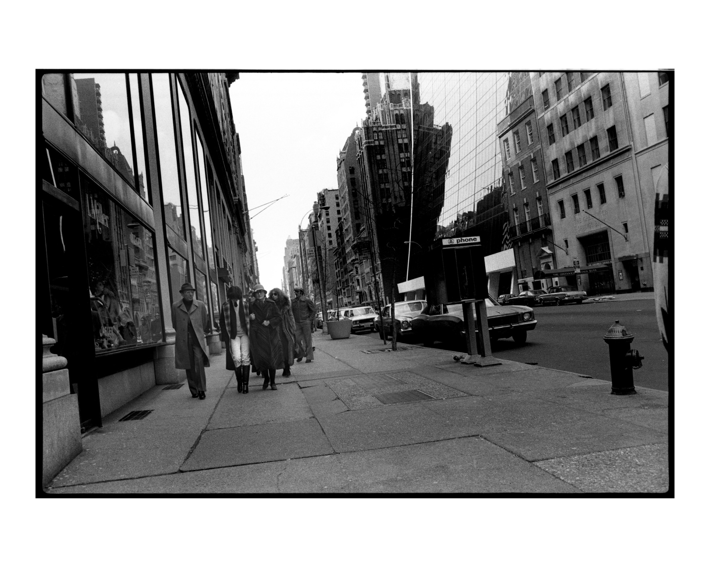

04/30/20 21:48:55 ¶ ●
What could go wrong?
04/21/20 16:23:40 ¶ ●
M86s at the end of their routes on 87th and West End
04/15/20 14:07:04 ¶ ●
Golden’s Art Supplies, circa 1980
04/03/20 23:07:18 ¶ ●

42nd Street, 1978